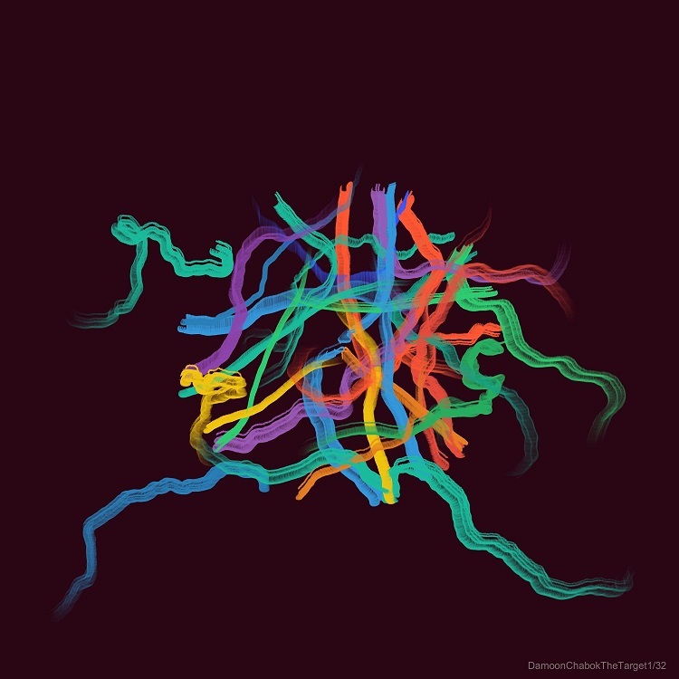
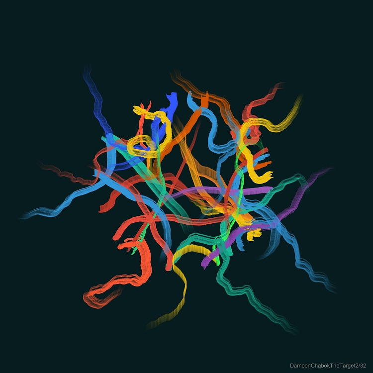
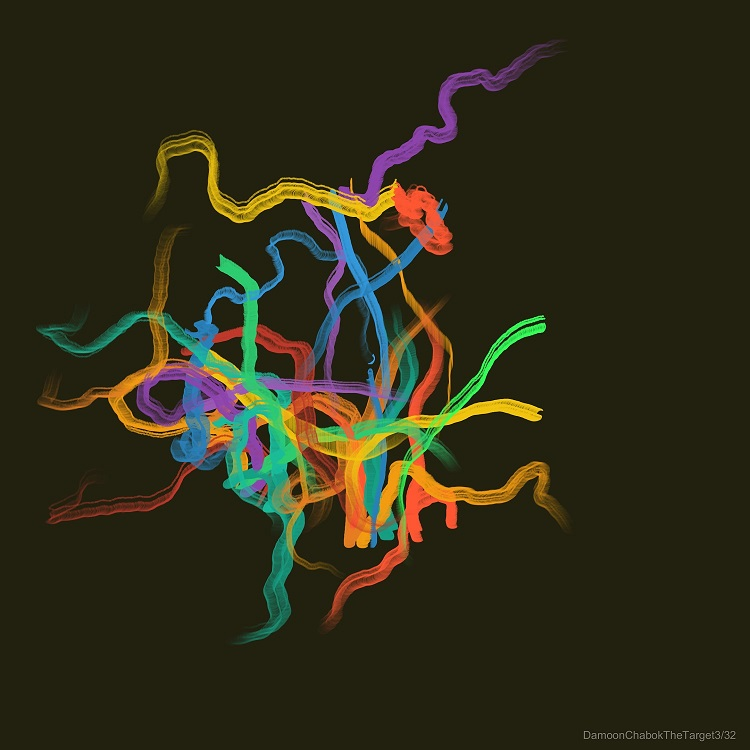

An ongoing generative art project exploring pursuit, adaptation, and the unstable relationship between desire and achievement.
The Target began with a simple question: What happens when a system spends its entire existence moving toward something that never fully stops moving away?
Each image is generated through agents, forces, constraints, and shifting objectives. Targets move, disappear, multiply, or become unreachable. The resulting structures are records of pursuit rather than records of arrival.
The project is not primarily concerned with geometry or aesthetics. It uses algorithmic behavior as a way to examine persistence, frustration, adaptation, and the tendency of systems to continue even when success becomes uncertain.
The Target investigates a condition familiar to both machines and humans: the continuous movement toward objectives that change while being pursued.
In these systems, success is unstable. Every approach alters the environment. Every solution creates new conditions. Every arrival contains the possibility of displacement.
Rather than producing static compositions, the project produces traces of decision-making under uncertainty. The generated forms emerge from repeated attempts to reduce distance, maintain direction, recover from failure, and respond to changing circumstances.
The work treats pursuit as a structural force. The target is not merely an object. It is a mechanism that organizes behavior, consumes attention, and shapes the path taken by the system.

Pursuit under stable conditions.

Target displacement and adaptive response.

Accumulated trajectories produced by repeated correction.
Medium: Generative Art
Tools: Processing / Java
Methods: Agent-based systems, force-driven motion, procedural generation, target-seeking behavior, adaptive constraints, and iterative emergence.
Each output is generated directly from code. No manual drawing is involved in the construction of the underlying structures.
The Target is part of a broader body of work examining survival, persistence, desire, and the mechanisms that compel systems to continue.
The project does not attempt to answer whether the target should be reached. It asks what pursuit itself creates.